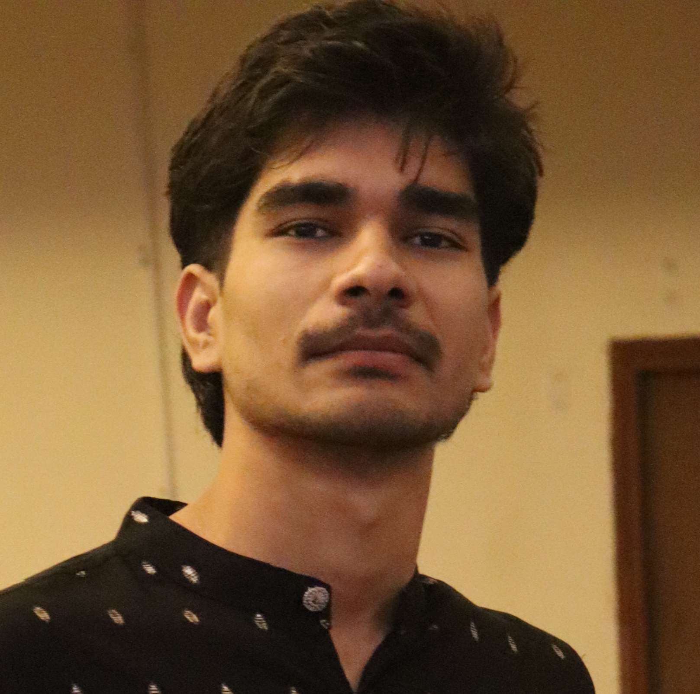

Abhay Tiwari
AI · ML · Cricket
Research Intern, IIT Hyderabad
I work on machine learning systems and enjoy building models that connect theory with real-world data and constraints.
Interests
- Machine Learning (VAEs, Diffusion, Representation Learning)
- Physics Informed Neural Networks
- Applied AI (remote sensing, climate, systems)
- Cricket (Tests >> ODIs >> T20Is)